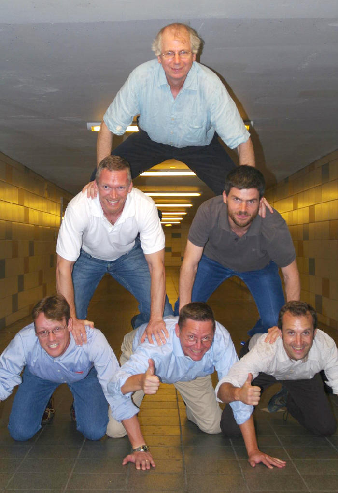

viz@ampl.com
> 1,400 members in [AMPL Google Group](https://groups.google.com/group/ampl) alone - the most popular input format on the [NEOS cloud server](http://www.neos-server.org/neos/) for optimization:
> 900,000 or 85% submissions in Jan-Sep 2013 * AMPL is high-level, solver-independent and efficient.

And to a man with a MIP solver...


nqueens-count.ampl:
model nqueens.ampl;
let n := 8;
option solver gecode;
option gecode_options 'countsolutions=1';
solve;
print 'The number of solutions is', Current.nsol;
running the script:
$ ampl nqueens-count.ampl
gecode 4.2.0: countsolutions=1
feasible solution
787 nodes, 302 fails
suffix nsol OUT;
The number of solutions is 92
model nqueens.ampl;
let n := 8;
option solver ilogcp;
option ilogcp_options 'solutionlimit=10 solutionstub=nqueens';
solve;
for {i in 1..Current.nsol} {
solution ('nqueens' & i & '.sol');
display Row;
}
$ ampl nqueens-multi.ampl
...
ilogcp 12.4.0: feasible solution
Row [*] :=
1 5
2 7
...
ilogcp 12.4.0: feasible solution
Row [*] :=
1 3
2 1
...

- A group of people wants to take a group photo.
- Each person can give preferences next to whom he or she wants to be placed on the photo.
- The objective is to find a placement that satisfies as many preferences as possible.
include gecode.ampl;
param nPeople integer > 0;
set PREFS within {i in 1..nPeople, j in 1..nPeople: i != j};
var Sat{PREFS} binary;
var Pos{1..nPeople} integer >= 1, <= nPeople;
maximize NumSat: sum{(i,j) in PREFS} Sat[i,j];
# Choose the bound consistent variant of alldiff/distinct.
s.t. OnePersonPerPosition:
alldiff{i in 1..nPeople} Pos[i] suffix icl icl_bnd;
s.t. SatDefn {(i,j) in PREFS}:
Sat[i,j] = 1 ==> abs(Pos[i] - Pos[j]) = 1;
s.t. SymmetryBreaking: Pos[1] < Pos[2];
- Deliver orders to clients with a single truck.
- Each order consists of a given quantity of a product of a certain type.
- The truck must be configured in order to handle one or several types of products.
- The truck (re)configuration cost depends both on original and new configuration.
- Multiobjective: both the cost (for configuring and loading the truck) and the number of travels needed to deliver all the orders must be minimized, the cost being the most important criterion.
- . . .
param NumTruckConfigs integer > 0;
set TruckConfigs = 0..NumTruckConfigs - 1;
param NumTrips integer > 0;
set Trips = 0..NumTrips - 1;
var truckConfigs{Trips} integer >= 0 <= NumTruckConfigs - 1;
# Truck load cannot exceed max. load for truck's configuration.
s.t. satisfyMaxLoad{t in Trips}:
load[t] <= element({c in TruckConfigs} MaxTruckConfigLoad[c],
truckConfigs[t]);
s.t. satisfyMaxLoad{t in Trips}:
load[t] <= MaxTruckConfigLoad[truckConfigs[t]];
IloAllowedAssignments in ilogcp,
extensional in Gecode.
Example:
param NumOrders integer > 0;
set Orders = 0..NumOrders - 1;
var configOfContainer{Orders} integer >= 0 <= NumTruckConfigs - 1;
param NumProductTypes integer > 0;
set AllowedContainerConfigs{0..NumProductTypes - 1};
s.t. restrictConfigOfContainer{o in Orders}:
in_relation(configOfContainer[o],
{c in AllowedContainerConfigs[ProductTypes[o]]} c);
s.t. restrictConfigOfContainer{o in Orders}:
configOfContainer[o] in
AllowedContainerConfigs[ProductTypes[o]];
minimize totalCost:
sum{t in Trips}
(if load[t] > 0 then
element({c in TruckConfigs} TruckCost[c],
truckConfigs[t])) +
sum{t in 0..NumTrips - 2} reconfigCost[t];
minimize tripCount: count{t in 0..NumTrips - 1} (load[t] > 0);
IloStaticLex with i-th objective treated as more important
than (i+1)-th.
(x1, ..., xn) in S for the in_relation constraint
- e[x] for the element constraint
* Support for more types of global constraints
* Connecting other CP solvers (maybe using libmzn?)